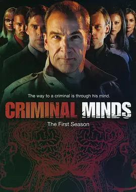

9.2
犯罪心理 第一季
Criminal Minds Season 1
2005
加拿大
评分 9.2
导演:
Charles Haid / Chris Long
演员:
曼迪·帕廷金 / 托马斯·吉布森 / 劳拉·格劳蒂尼 / 谢默·摩尔 / 马修·格雷·古柏勒 / A·J·库克 / 克里斯汀·范奈丝
类型:
剧情,悬疑,犯罪
剧情简介
FBI 行为分析组 BAU 常驻弗吉尼亚州匡提科，却几乎没有真正意义上的“日常工作日”。每当全美各地出现连环杀人或极端暴力案件，他们被临时召回，搭机飞往陌生城市，在尚未露面的嫌犯下一次出手前，拼命读懂那颗扭曲的心。走进案发现场时，已经没有惊叫，只剩下冰冷的血迹和被清理过的痕迹，团队要在这些残留的细节里，拼出一个活生生的人。老练的杰森·吉德恩擅长从一句话、一个眼神里看出破绽，但长期与暴力为伴，也让他背负沉重心理阴影；沉稳的阿伦·“霍奇”·霍奇纳既要指挥行动，又要在会议室里说服地方警局和上级。年轻的天才瑞德记忆力惊人，却在社交场合显得笨拙，他用成堆数据和案例图表，帮大家把“怪物”具象化。摩根习惯冲在前线，追嫌犯、破门、保护现场；JJ 则在媒体与受害者家属之间周旋，把残酷事实转化为可以被听懂的话。每一宗案件都以一份侧写报告为目标：年龄、职业、家庭状况、生活习惯乃至童年创伤，都要在有限时间里被推演出来。BAU 成员在酒店房间、警局会议室和狭窄的机舱里反复推敲线索，嫌犯的作案模式逐渐清晰，也不断勾起他们各自的伤口。案件解决的瞬间往往并不轻松，更多的是无力感——他们阻止了下一次犯罪，却无法抹去已经发生的死亡。这一季通过一个个风格各异的案件，展示出“以暴制暴”的危险边界、媒体狂热背后的肆无忌惮，以及普通人在极端压力下可能做出的选择。BAU 成员在追捕连环杀手的同时，也不断确认自己为何仍要留在这个岗位上：不是因为对黑暗着迷，而是因为比任何人都清楚，如果他们不在这里，下一具尸体出现得会更快。